PART 1
在 GCP 啟用 Drive / Gmail / Sheets 三個 API
先讓 Google 知道你打算用這幾個服務。不啟用，後面就算授權也沒用。
一
登入 Google Cloud，建一個叫 n8n 的專案
GCP
為什麼要做這件事
Google Cloud 用「專案」（Project）來分裝你的東西。一個專案像一個資料夾，裡面放著你啟用的 API、建立的用戶端、產生的金鑰。
我們建一個專門給 n8n 用的專案，未來所有 n8n 相關的 Google 設定都集中在這裡，乾淨好管。
操作步驟
- 去 console.cloud.google.com，用你常用的 Google 帳號登入。
- 第一次登入的話：選國家 Taiwan、勾同意條款、按 同意並繼續。
- 進到首頁，看到「歡迎使用」畫面。畫面頂端中央點「選取專案」那顆按鈕。
- 跳出視窗右上角點 新增專案。
- 專案名稱填
n8n-001（或你喜歡的名字），按 建立，等 5 到 10 秒。
- 建好後，畫面會自動跳到新專案的 Cloud Hub 主畫面，頂端會顯示
n8n-001。確認頂端顯示這個名字才能繼續。
前往 Google Cloud Console
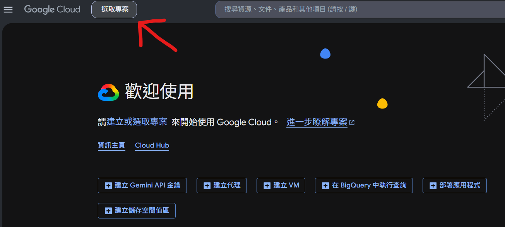
截圖位置
step-select-project.png
首頁頂端點「選取專案」
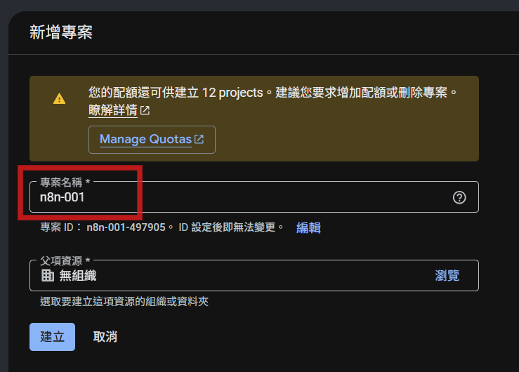
截圖位置
step-create-project.png
專案名稱填 n8n-001，按建立
第一次用 Google Cloud 會要你綁信用卡。Drive、Gmail、Sheets 這三個 API 完全免費，個人用根本不會扣錢，放心綁。
二
啟用 Google Drive API（以 Drive 為例）
GCP
為什麼要做這件事
Google Cloud 預設什麼 API 都沒開。要用哪個 Google 服務，就要先去找到那個 API 的開關，按啟用。
這裡用 Drive 當示範。Gmail、Sheets、Calendar、YouTube 等其他 Google 服務都是同一個套路，只是換個關鍵字搜尋而已。
操作步驟
- 看頁面頂端右邊有一個放大鏡圖示（搜尋按鈕），點它。
- 跳出搜尋列，輸入
drive。
- 搜尋結果第一筆是 Google Drive API（旁邊寫 Marketplace），點它。
- 進到「產品詳細資料」頁，看到 Google Drive API 介紹，按下面的 啟用 按鈕。
- 等幾秒，看到「已啟用 API」或進入 API 管理頁面，就代表 Drive API 啟用完成。
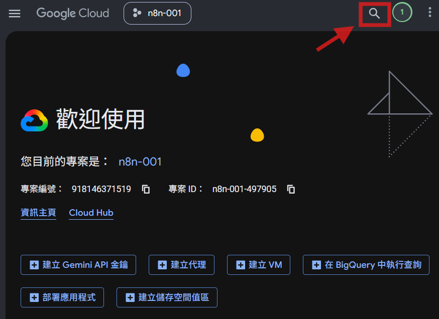
截圖位置
step-search-button.png
頂端右邊放大鏡圖示，點它叫出搜尋列
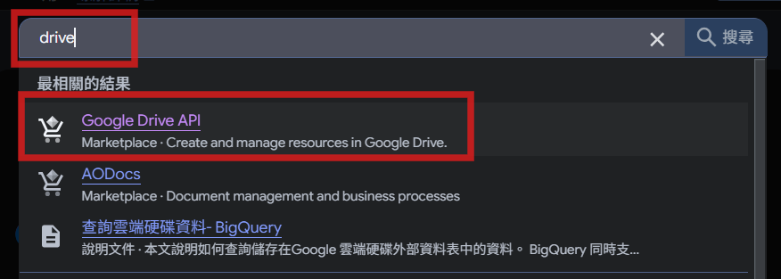
截圖位置
step-search-drive.png
輸入 drive，點第一筆 Google Drive API
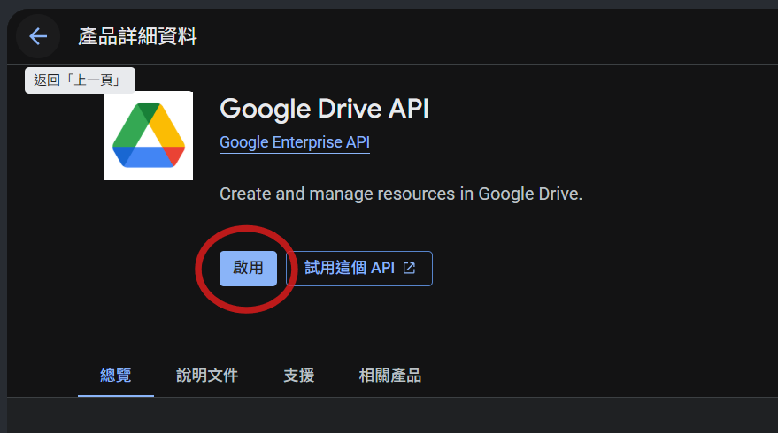
產品詳細資料頁，按下方藍色的「啟用」
啟用是一次性動作，同一個專案下，一個 API 啟用過就永遠是開的。
Gmail、Sheets、其他 Google 服務如法炮製：同樣按搜尋圖示，分別搜 gmail、sheets、calendar、youtube 等，找到對應 API 按啟用即可，流程一模一樣。
PART 2
先設「OAuth 同意畫面」
這段是 Google 強制的順序：必須先設好同意畫面，才能建用戶端。為什麼？因為使用者按授權時 Google 會跳出視窗寫「某某 App 要存取你的 Gmail」，那個視窗的內容就是這裡設定的。沒設就沒視窗可跳，整套 OAuth 走不通。
小提醒：新版 Google Cloud 介面有點變
2024 年底 Google 把這塊重新整理成「Google Auth Platform」獨立功能區，左側選單分成「品牌、目標對象、用戶端、資料存取權、驗證中心」等好幾頁。第一次進去 Google 會用引導流程帶你一頁一頁設好，跟著按就好。
一
進「憑證」頁面，左側點「OAuth 同意畫面」
GCP
為什麼要做這件事
OAuth 相關設定全部都在「API 和服務」這個分類下面。左側選單裡「憑證」管金鑰跟用戶端，「OAuth 同意畫面」管授權視窗的內容。第一次先進「OAuth 同意畫面」設好品牌資料，下一段才能建用戶端。
操作步驟
- 左上角點漢堡選單（三條橫線），找 API 和服務，子選單點 憑證。
- 進到「憑證」頁面，看左側選單，點「OAuth 同意畫面」。
- 第一次進去會出現「Google Auth Platform」歡迎畫面，按引導開始設定。
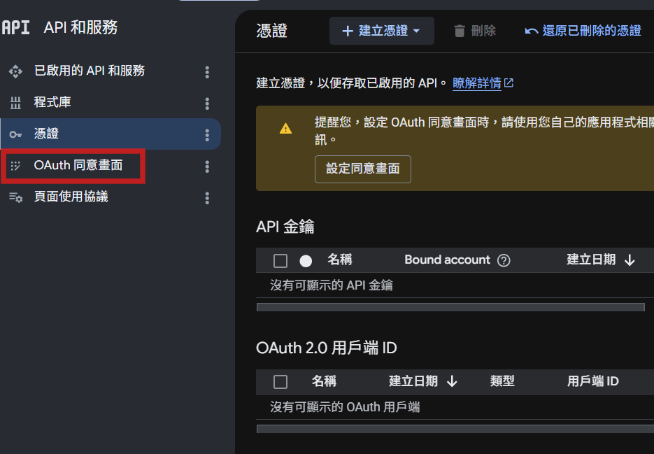
截圖位置
step-credentials-menu.png
左側選單點「OAuth 同意畫面」
二
填應用程式資訊 + 目標對象選「外部」
GCP
為什麼要做這件事
引導流程會問你三件事：(1) 這個 App 叫什麼（給授權視窗顯示用）；(2) 目標對象是誰；(3) 聯絡資訊找誰。
關鍵在「目標對象」這個選項：
- 內部：只有你公司同事（同個 Google Workspace 組織）能用。要有付費 Workspace 帳號才能選，個人 Gmail 沒這選項。
- 外部：任何有 Google 帳號的人都能用（包括你自己）。個人用必選這個。
操作步驟
- 第一頁「應用程式資訊」：應用程式名稱填
n8n，使用者支援電子郵件選你的 Gmail。按 下一步。
- 第二頁「目標對象」：選 外部（個人帳號的話只有這個選項可選）。按 下一步。
- 第三頁「聯絡資訊」：開發人員電子郵件填你的 Gmail。按 下一步。
- 最後一頁勾「我同意 Google API 服務條款」，按 建立。
- 完成後會跳回 Google Auth Platform 主畫面，左側看到「總覽 / 品牌 / 目標對象 / 用戶端」等分頁。
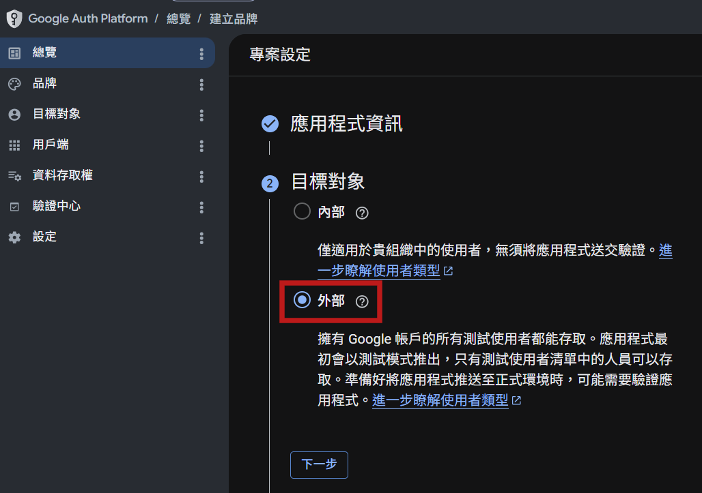
截圖位置
step-audience-external.png
目標對象選「外部」，個人用必選這個
三
到「目標對象」頁面加測試使用者（不加會被擋）
GCP
為什麼要做這件事
剛建的 App 預設是「測試」狀態，只有列在「測試使用者」清單裡的 Google 帳號才能授權。其他人按授權會被 Google 擋下來。
所以你一定要把自己的 Gmail 加進去，否則待會在 n8n 按授權會失敗。
操作步驟
- 在 Google Auth Platform 左側選單，點「目標對象」。
- 頁面捲到下面找「測試使用者」區，按 + Add users（新增使用者）。
- 跳出視窗，在輸入框填入你自己的 Gmail（就是你要被 n8n 代理存取的那個帳號）。
- 按 儲存。看到那個 Gmail 出現在測試使用者清單就完成了。
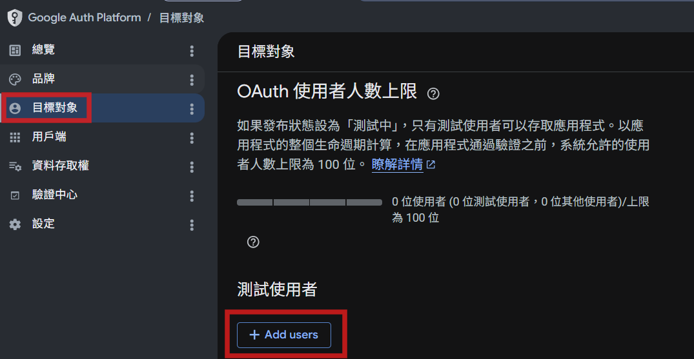
截圖位置
step-add-test-users.png
左側選單點「目標對象」，下面找測試使用者區，按新增
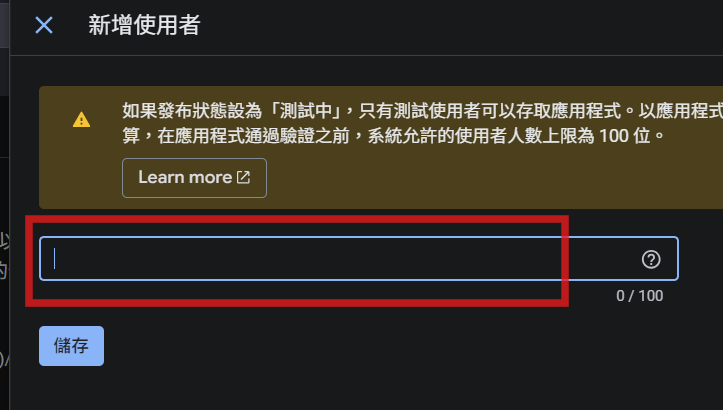
截圖位置
step-add-user-input.png
輸入你自己的 Gmail，按儲存
個人用根本不用「發布」這個 App，永遠停在「測試」狀態就好。把要用的帳號全加進測試使用者，授權都能跑。Google 那段「未驗證 App」警告畫面，按進階繼續就好。
PART 3
建立 OAuth 用戶端
同意畫面設好了，現在才能建用戶端。注意：這段先建一半，已授權的重新導向 URI 留空。那個 URI 要從 n8n 那邊拿，第四段再回來補。
一
在 Google Auth Platform 總覽，按「建立 OAuth 用戶端」
GCP
為什麼要做這件事
同意畫面設好之後，回到 Google Auth Platform 的「總覽」頁，會看到一個很大的按鈕「建立 OAuth 用戶端」，那就是要建用戶端的入口。
用戶端就是「應用程式的身份證」，建好之後會拿到一組用戶端 ID跟用戶端密鑰，給 n8n 帶著它去敲 Google 的門。
操作步驟
- 在 Google Auth Platform 左側選單點 總覽。
- 頁面中央「指標」區會寫「尚未針對這項專案設定 OAuth 用戶端」。
- 那行右邊有 建立 OAuth 用戶端 按鈕，點它。
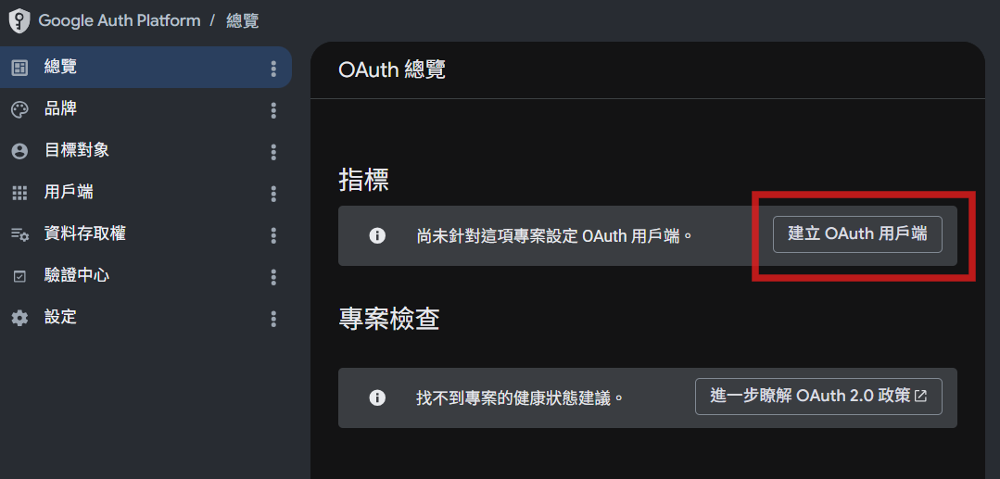
截圖位置
step-create-client-btn.png
OAuth 總覽頁，點「建立 OAuth 用戶端」
二
應用程式類型選「網頁應用程式」，名稱填 n8n
GCP
為什麼要做這件事
應用程式類型有好幾種選擇（網頁、桌面、Android、iOS、電視等）。給 n8n 用一定要選「網頁應用程式」。
為什麼？因為 n8n 是跑在瀏覽器裡的網頁應用。授權完成後，Google 要把你「導回」n8n 的網址，這個機制只有網頁應用程式才支援。
名稱填什麼都行，填 n8n 最直覺，未來回 Google Auth Platform 一看就知道這支用戶端是給 n8n 用的。
操作步驟
- 應用程式類型下拉選
網頁應用程式。
- 名稱填
n8n。
- 「已授權的 JavaScript 來源」留空。
- 「已授權的重新導向 URI」先留空（這個要從 n8n 拿，下一段教你拿）。
- 按 建立。
- 跳出視窗顯示 用戶端 ID 跟 用戶端密鑰，先別關。下一段要用。
邏輯銜接：現在你卡在「需要重新導向 URI 但還沒有」。這正常。那個 URI 是 n8n 啟動時自動生成的網址，要去 n8n 那邊看才知道。接下來進 PART 4 去拿。
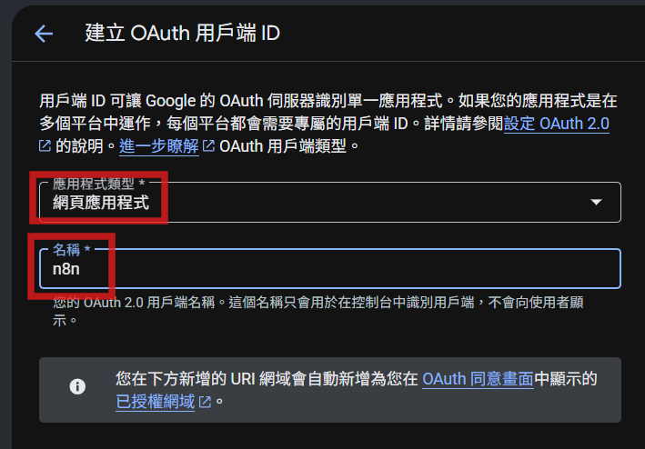
截圖位置
step-client-form.png
應用程式類型選網頁應用程式，名稱填 n8n
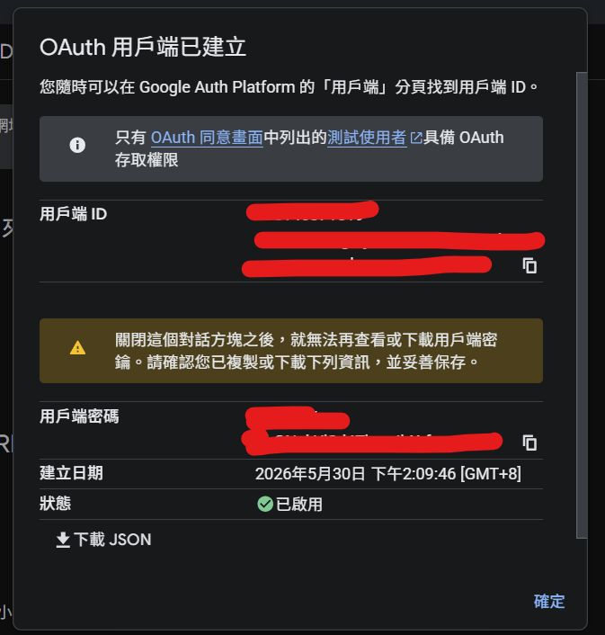
截圖位置
step-client-created.png
跳出「OAuth 用戶端已建立」視窗，下一段要回頭複製這裡的用戶端 ID 跟密鑰
▷ 接線 PART 4 ◁
在 n8n 跟 GCP 之間來回接線
這段是最容易卡關的「邏輯交叉點」。簡單講：n8n 給 GCP 一個 URL（讓 Google 知道授權完要把人送回哪），GCP 給 n8n 兩串字（ID + Secret，讓 n8n 證明自己是合法的）。雙向都填完才會通。
為什麼要交叉做
OAuth 授權的核心是「雙方都要知道對方」。Google 要知道「授權完把使用者送回哪」（這就是 Redirect URI），n8n 要知道「我代表的是哪個 App」（這就是 Client ID + Secret）。
這兩串資訊一個在 n8n 手上、一個在 Google 手上，所以必須在兩邊之間貼來貼去。沒辦法只在一邊做完。
一
開 n8n，建一個 Google Drive OAuth2 憑證
n8n
為什麼要做這件事
n8n 那邊需要為每種 Google 服務建一份「Credential（憑證）」。我們先建 Google Drive 的，把 Redirect URL 拿出來，回 GCP 補上。
Gmail 跟 Sheets 之後也要建各自的憑證，但流程一樣，都會用到剛剛在 GCP 建的同一個 Client ID 跟 Secret。一次設定，三個共用。
操作步驟
- 打開 n8n（http://localhost:5678）。
- 左側選單點 Credentials（憑證），頁面右上角按紅色的 Create credential（建立憑證）按鈕。
- 跳出 Add new credential（新增憑證）視窗，搜尋列輸入
drive，點 Google Drive OAuth2 API。
- 進入憑證設定頁面，最上面可以幫憑證命名（例如
XXX 的 Google drive，方便之後辨認）。
- 看到欄位 OAuth Redirect URL，那是 n8n 自動產生的，長得像
http://localhost:5678/rest/oauth2-credential/callback。
- 點右邊的複製按鈕，把這個 URL 複製起來。
n8n 視窗先別關。等一下還要回來貼用戶端 ID 跟密鑰。直接開新分頁去 GCP 補資料就好。
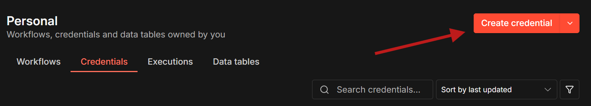
截圖位置
step-n8n-credentials.png
n8n 左側選單點 Credentials，右上按 Create credential
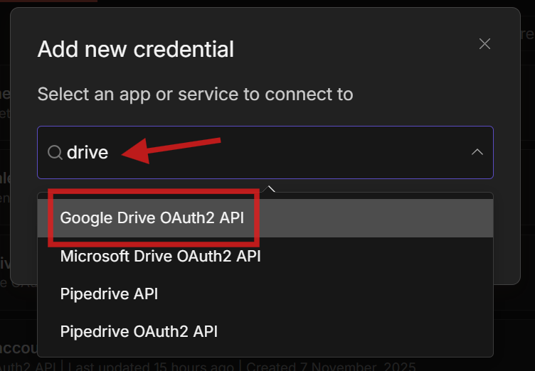
截圖位置
step-n8n-search-drive.png
搜尋 drive，點 Google Drive OAuth2 API
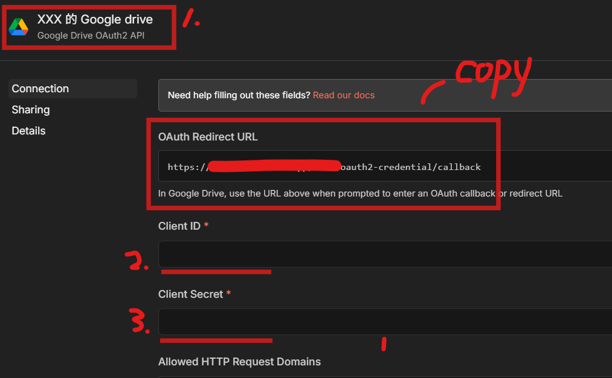
截圖位置
step-n8n-redirect-url.png
圖中三處標號：1 名稱、2 OAuth Redirect URL 要複製、3 Client ID 跟 Secret 等下從 GCP 拿回來貼
二
回 GCP，把重新導向 URI 貼到剛建的用戶端
GCP
為什麼要做這件事
Google 收到「已授權的重新導向 URI」之後，就知道「授權完成後要把使用者送回這個網址」。沒填這個，Google 會擋下授權說「redirect_uri_mismatch」。
操作步驟
- 切回 Google Cloud Console 的 Google Auth Platform 頁面，左側點 用戶端。
- 找到剛建的 n8n 用戶端，點名稱進去編輯。
- 找到 已授權的重新導向 URI 區塊，按 + 新增 URI。
- 會跳出 URI 1 輸入欄，把剛從 n8n 複製的網址貼到那個欄位（取代預設的 https://www.example.com）。
- 按 儲存。設定可能需要幾分鐘才生效。
- 回用戶端清單，再點 n8n 進去，右上角會看到 用戶端 ID 跟 用戶端密鑰，準備複製這兩串。
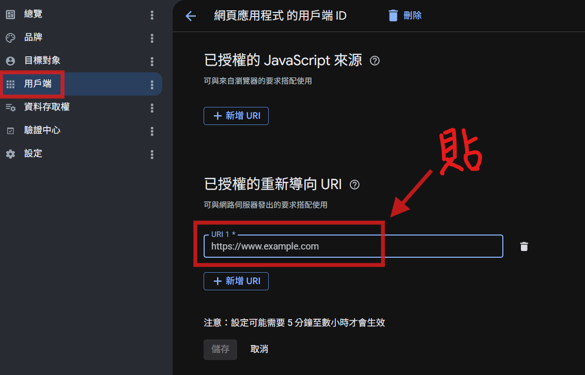
截圖位置
step-gcp-redirect.png
左側選單點「用戶端」進去，把 n8n 給的網址貼到「已授權的重新導向 URI」
三
回 n8n，把 GCP 給的用戶端 ID 跟密鑰貼進去
n8n
為什麼要做這件事
用戶端 ID 是 n8n 的「身份證號碼」，用戶端密鑰是它的「密碼」。Google 認得這兩串，才會把授權當作合法。
沒填這兩串，n8n 按 Sign in with Google（用 Google 帳戶登入）會直接失敗。
操作步驟
- 把 GCP 視窗的 用戶端 ID 複製，貼到 n8n 那邊欄位
Client ID。
- 同樣方式把 用戶端密鑰 複製、貼到 n8n 欄位
Client Secret。
- n8n 那個憑證頁面就填齊了三項：OAuth Redirect URL（自動）、Client ID（你貼的）、Client Secret（你貼的）。
用戶端密鑰跟密碼一樣，不要外流、不要 push 到 GitHub。萬一外流就回 GCP 重新產生。詳細安全守則在頁面最下方。
四
按「Sign in with Google」授權，看到 Connected 就成功
n8n
為什麼要做這件事
所有資料填好之後，按授權按鈕，n8n 會跳出 Google 的授權視窗（也就是 PART 2 設定的那個同意畫面）。在那個視窗按同意，n8n 才真正拿到「以你身份操作」的權限。
操作步驟
- 在 n8n 憑證頁面，按 Sign in with Google（用 Google 帳戶登入）按鈕。
- 會跳出新視窗讓你選 Google 帳號，選你剛在「測試使用者」加的那個帳號。
- 會看到一個警告「Google 尚未驗證這個應用程式」，按 進階，再按 前往 n8n（不安全）。這正常，因為這是你自己的 App，不會通過 Google 正式審查。
- 看到「選取要讓 [App名] 存取的範圍」清單，勾「全選」把所有權限都勾起來，按 繼續。
- 視窗會自動關閉，回到 n8n。憑證頁面標題出現綠色 Connected（已連線）字樣，就成功了。
- 按 Save（儲存）把這個憑證存下來，給未來的 workflow 用。
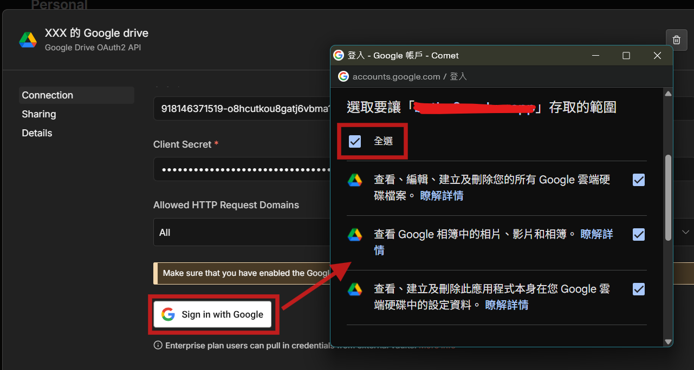
截圖位置
step-n8n-authorize.png
左邊按 Sign in with Google，跳出右邊授權視窗，勾「全選」按繼續
Drive 憑證搞定了
想加 Gmail、Sheets、Calendar 等其他 Google 服務？只要做兩件事：
第一，回 PART 1 第二步，照同樣方法去 GCP 啟用對應的 API（搜 gmail / sheets / calendar 等）。第二，回 n8n Credentials 重複 PART 4 第一步，分別建 Gmail OAuth2 API、Google Sheets OAuth2 API 等憑證，用同一組 GCP 用戶端 ID 跟密鑰。Redirect URL 都一樣，不用再回 GCP 改。